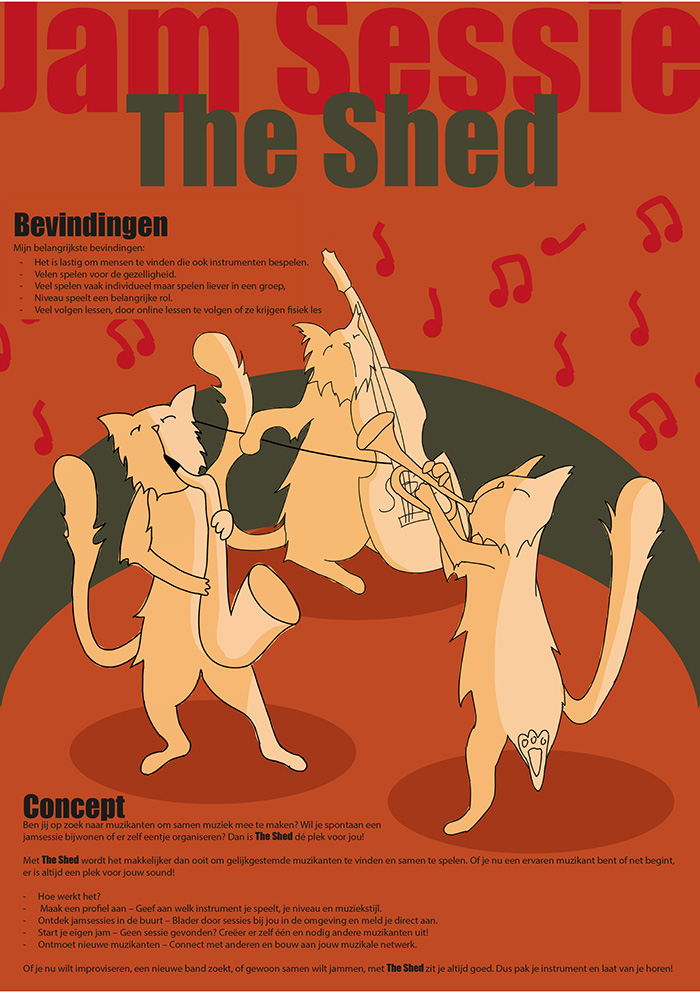
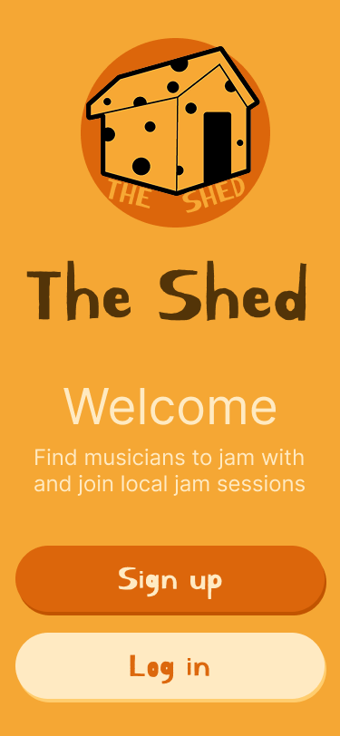
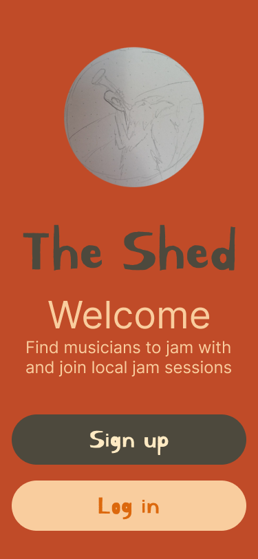

At our school, there are lots of smaller communities, each with their own vibe. For this project, we were challenged to design a prototype that could bring those communities together. As a trumpet player myself, I thought—how great would it be to connect through music? That’s how I came up with a concept for organizing jam sessions. The name The Shed was inspired by the old-school charm of making music in garages and garden sheds. That setting sparked the design direction too—because let’s be honest, where there’s a shed, there are usually a few mice sneaking around. And that little detail brought the whole vibe to life.


